Catalytic Converter - 4 Cylinder
Print
Operation Code: 45.01.01-02
Important Information
 WARNING: Do not attempt this procedure until the engine and exhaust are completely cool.
WARNING: Do not attempt this procedure until the engine and exhaust are completely cool.
Removal
- Remove right rear wheelarch liner.
NOTE: Procedure is the same as left side component.
- Remove turbocharger assembly. Refer to procedure.
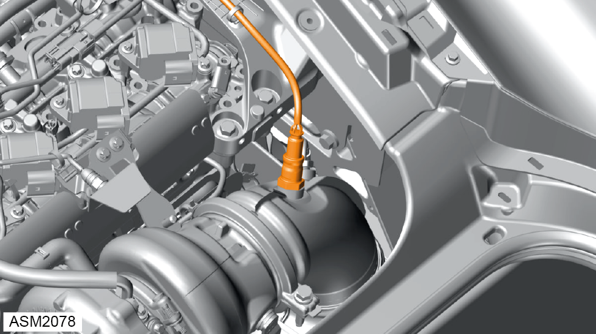
- Release union nut securing pre-cat oxygen sensor to catalytic converter. Torque 45 Nm.
- Remove pre-cat oxygen sensor.
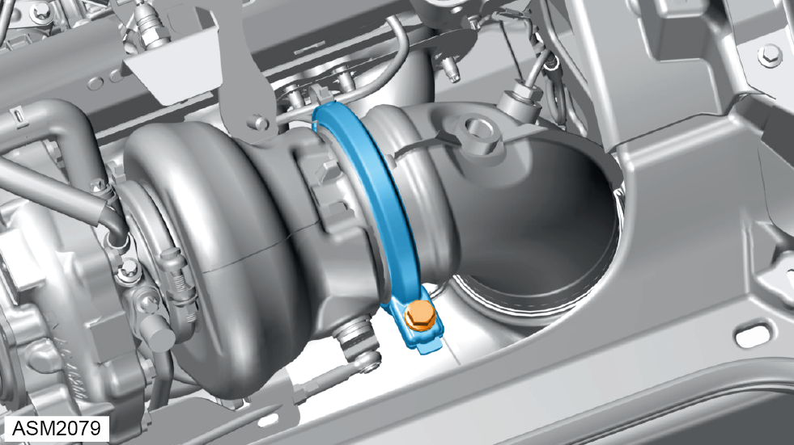
- Loosen clamp bolt and remove exhaust pipe clamp. Torque: 17 Nm.
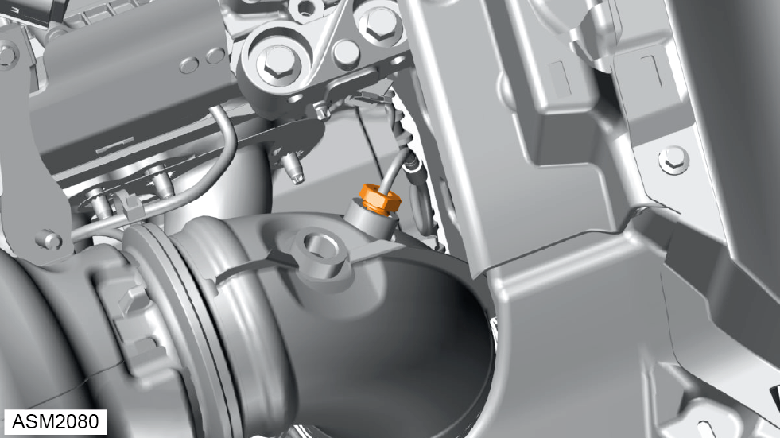
- Release union nut securing temperature sensor to catalytic converter. Torque 45 Nm.
- Remove temperature sensor.
- Remove rear silencer. Refer to procedure.
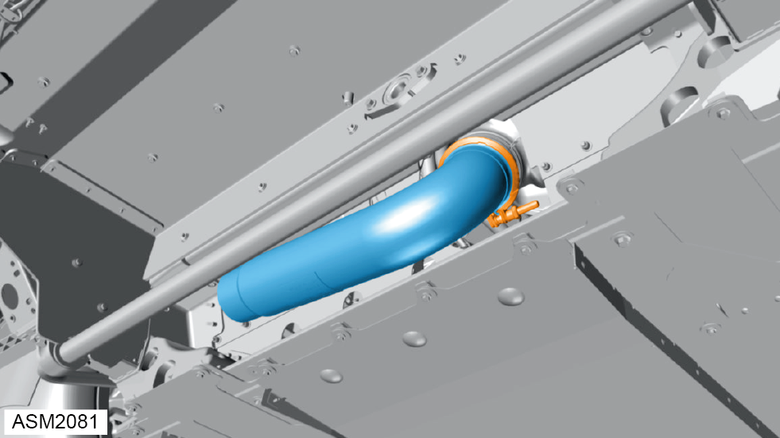
- Release clamp securing catalytic converter to exhaust pipe. Torque: 21 Nm.
- Remove exhaust pipe.
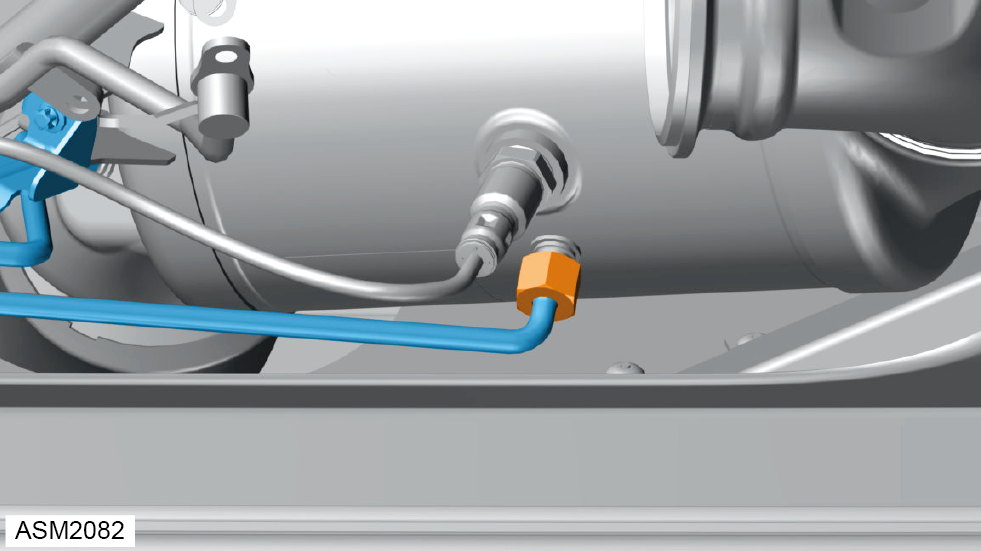
- Release union nut securing post-cat oxygen sensor to catalytic converter. Torque 45 Nm.
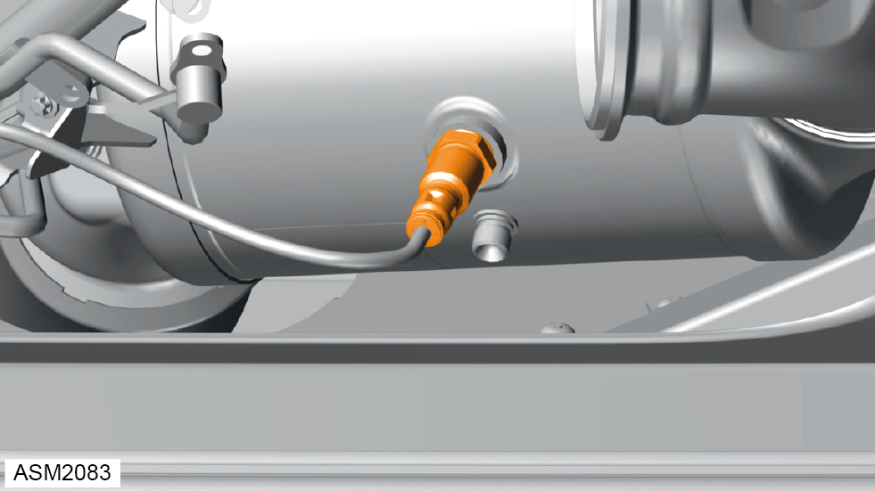
- Remove post-cat oxygen sensor.
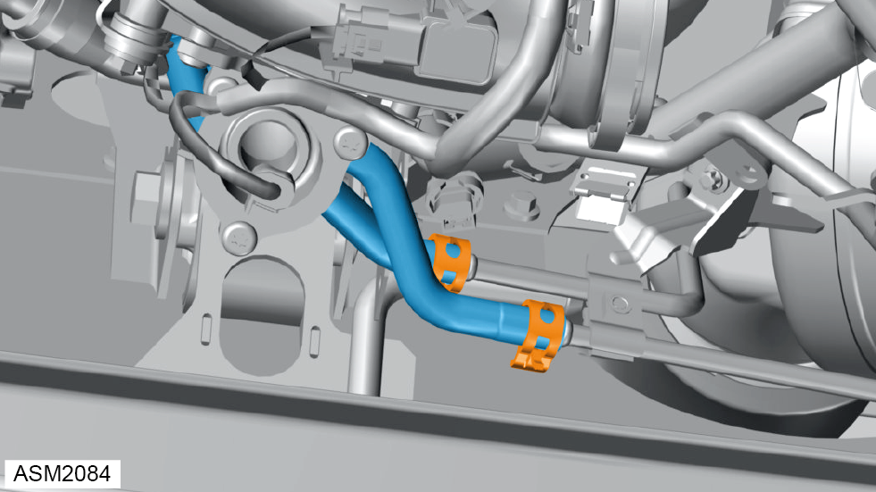
- Release clamps (x2) securing Differential Pressure Sensor (DPS) hoses to catalytic converter.
- Disconnect DPS hoses from catalytic converter.
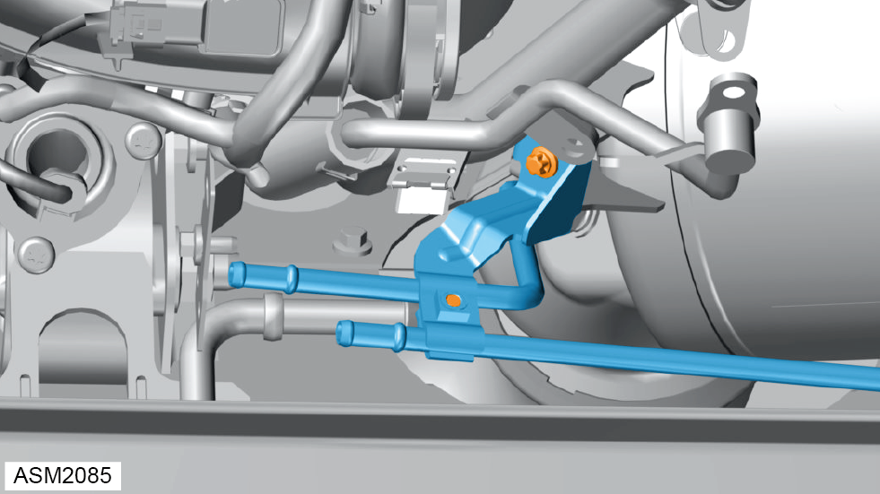
- Remove bolts (x2) securing DPS bracket and pipe to catalytic converter.
- Remove DPS bracket and pipe.
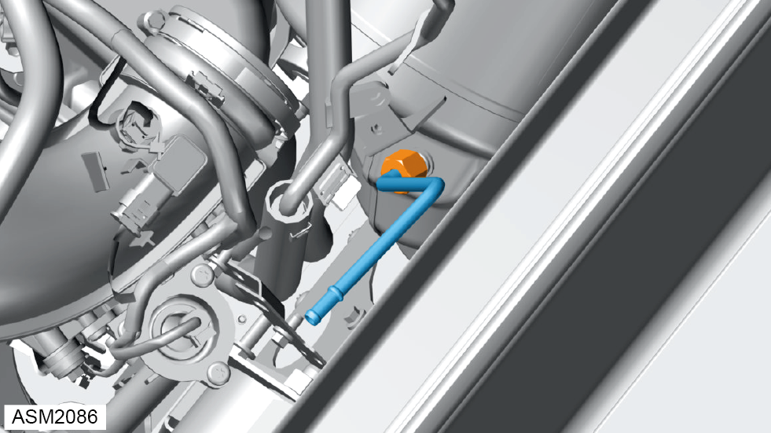
- Release union nut securing DPS sensor to catalytic converter. Torque 45 Nm.
- Remove DPS sensor.
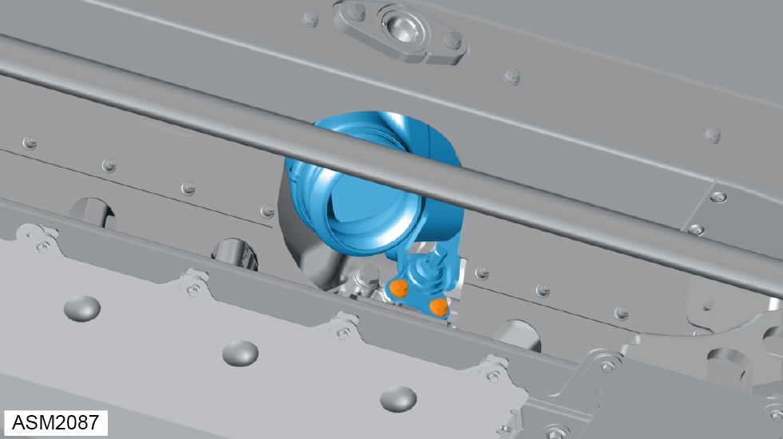
- Remove M8x20 bolts (x2) securing catalytic converter to engine mounting bracket. Torque 20 Nm.
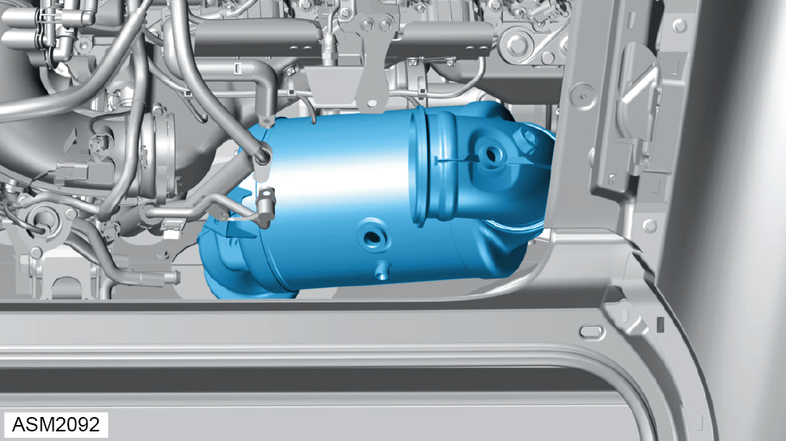
- Remove catalytic converter.
Installation
- Installation is the reverse of removal procedure except for the following:
- Renew discarded gaskets.